Model-Based Design Tool


This tutorial describes how to use QM™ to model and implement a simple "Blinky" application, which can blink an LED on an embedded board or just print the state changes of the LED to the screen when executed on the desktop.
If you prefer to watch the video version of this tutorial, it is available on the Quantum Leaps YouTube Channel:
To create a new model, go to menu or press the New Model button in the Edit Toolbar. This will open the following New Model Dialog Box :

qpc for QP/C™, qpcpp for QP/C++™, and qpn for QP-nano™. For this tutorial, you leave the default qpc framework type..qm extension will be added automatically. For this tutorial, you rename the model to blinky.<your-directory>\blinky, where <your-directory> is a directory of your choice. NOTE: the model directory provides also the reference point for the code generation. All generated directories and files are relative to the model file directory.Alternatively, you can create the Blinky model from the Provided Template. As shown in the screen shot below, you select the blinky.qm Template in the New Model dialog:
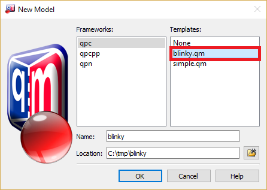
When you close the dialog with the button in this case, the blinky model will be copied from the provided template and will be ready. You can inspect the model, show the Blinky state diagram, generate code from it, build the application and run it on your desktop PC.
Now you can to start adding items to the new model.
The first item you add is a Package. A package in UML is a grouping construct that allows you to combine other model items into a higher-level unit—the package. The most common use of a package is to group together classes, but a package can hold also free attributes, free operations, and even other packages.

AOs (Active Objects) and the stereotype to components.
Next you need to add a class to the new package, because only classes can have behavior (i.e., State Machines).

Blinky and the superclass to qpc::QActive.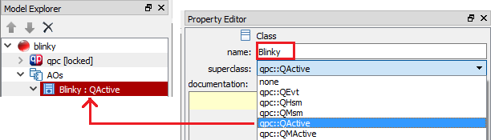
Next, you need to add a Time Event attribute that will deliver the periodic stimulus to trigger blinking in your Blinky state machine.

timeEvt, the type to qpc::QTimeEvt, and visibility to private.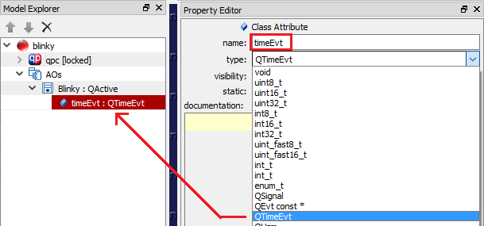
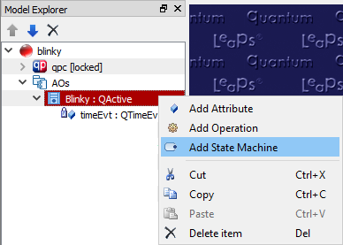
off and add the entry action to this state BSP_ledOff();.on and add the entry action to this state BSP_ledOn();.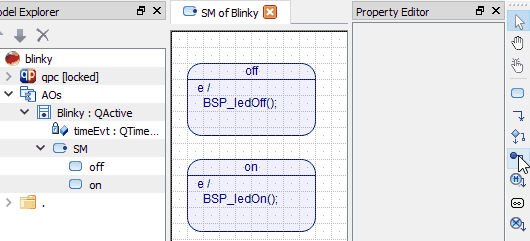
QTimeEvt_armX(&me->timeEvt, BSP_TICKS_PER_SEC/2, BSP_TICKS_PER_SEC/2);BSP_TICKS_PER_SEC/2 number of clock ticks (i.e., in 1/2 of a second) and also every BSP_TICKS_PER_SEC/2 number of clock ticks (i.e., every 1/2 of a second).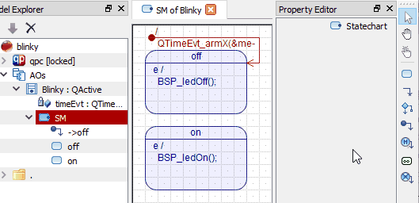
TIMEOUT.TIMEOUT.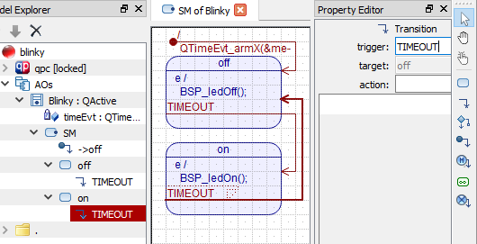
Compared to most other graphical tools based on state machines, QM™ turns the code generation "upside down". QM™ lets you determine the generated code structure, directory names, file names, and elements that go into every file (see Physical Design). You can mix your own code with the generated code and use QM to generate as much or as little of the overall code as you see fit .
First, you need to create a directory, which will determine the location of the files generated on disk relative to the QM Model File.
. (dot) for the name of the directory. The dot means the same directory as the QM Model File, meaning that your code will be generated in the same directory as your model.Once you have a directory, you can add Files to it. In a real-life project you would typically split the code into header (.h) files, place each active object in its own source (.c) file, and use separate .c files for the Board Support Package (BSP) and main(). But for the sake of simplicity, this tutorial will put the whole implementation in just one file: blinky.c, which you create as follows:
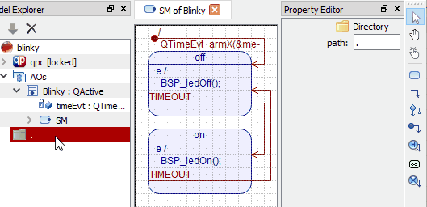
blinky.c in the name box and press Enter. Note that the file icon changes to .In QM™ you provide the body of every file-template, in which you can type your own code as well as Code-Generation Directives.
Blinky class, and $define${AOs::Blinky} for generating the Definition of the of the Blinky class.

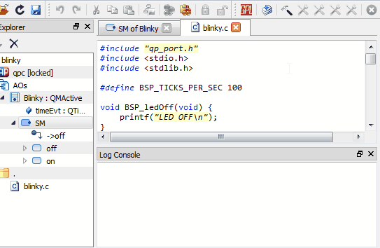
At this point QM™ has generated the blinky.c file in the same directory as the blinky.qm QM Model File. You can inspect the generated blinky.c file on the disk with your favorite code editor.
You build the generated code just as any other hand-crafted code. This simplistic tutorial generated the whole project in just one source file blinky.c.
The Board Support Package (BSP) functions coded at the beginning if the blinky.c file are designed to run on the desktop OS, such as Windows or Linux, because of the printf() statements. Here is how to build the blinky.exe executable on Windows command prompt:
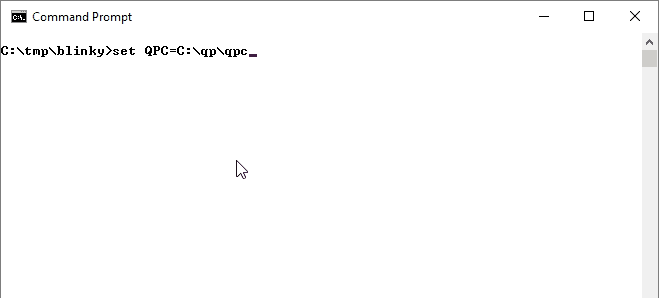
First, you set the environment variable QPC to point to the location of the QP/C framework on your machine. Here, QCP=C:\qp\qpc, which is the default location, but if you installed QP/C in different location, you need to set QPC to the actual location on your machine.
set QPC=C:\qp\qpc
Next, you invoke the free gcc compiler to build your blinky.c file. Here, the MinGW gcc is taken from the QTools collection installed in the default C:\qp\qtools\bin.
gcc blinky.c -oblinky.exe -I%QPC%\include -I%QPC%\ports\win32 -L%QPC%\ports\win32\dbg -lqp
gcc compiler is typically not installed, so you need to download and install it. The QTools collection for Windows contains the MinGW gcc compiler and other Unix-style utilities.Finally, you run the produced blinky.exe file, which starts printing to your screen.
blinky
You exit the application by pressing .
Building and running Blinky on the POSIX platforms (such as Linux and MacOS) is a little bit more involved, because the QP framework is built from sources as opposed to being linked as a pre-built library. The recommended procedure is to create the Blinky model from the existing template, which also generates the Makefile for building the application. The following screen shot shows how to build and run the Blinky project on Linux:
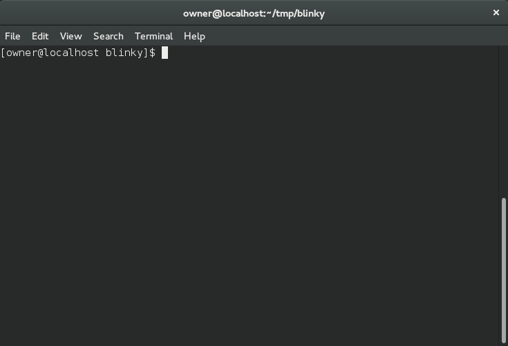
To build the Blinky project for an embedded board, you need to modify the BSP (Board Support Package), to turn the LED on and off. You also need to use the specific cross-compiler. Please refer to the "Getting Started" video for more information about getting started with the QP frameworks. Also, you might read "Getting Started" Application Notes: QP/C, QP/C++, and QP-nano.

Next: QM™ Examples